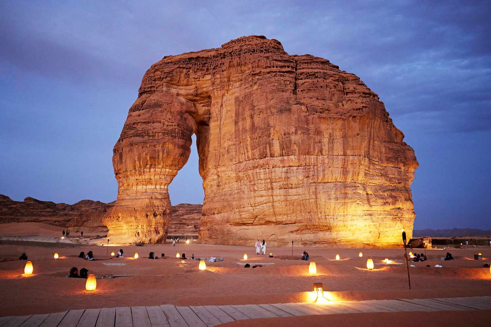
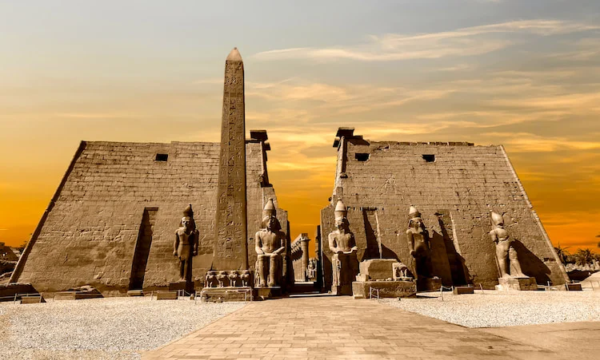
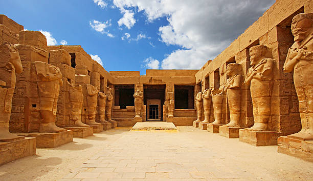
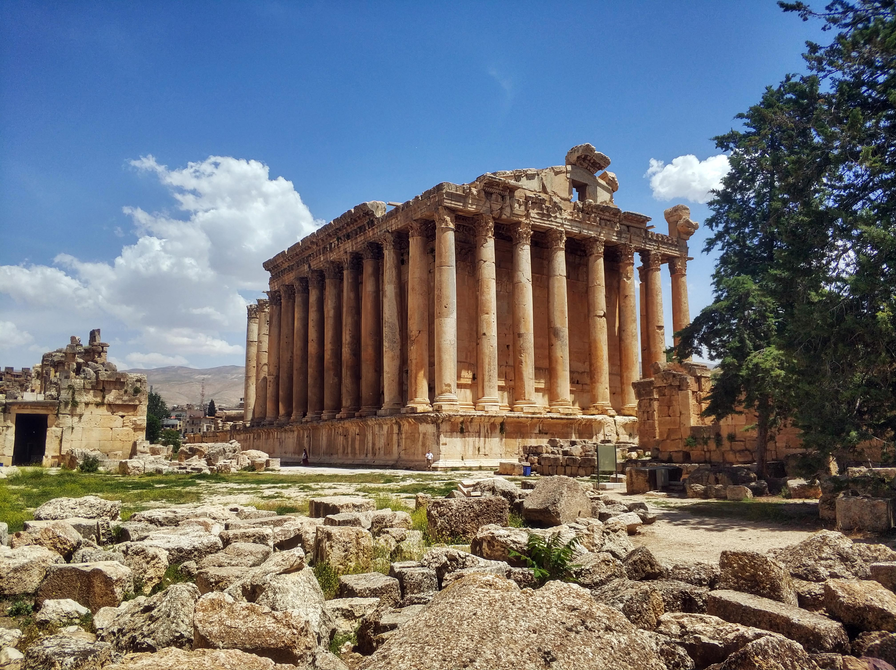
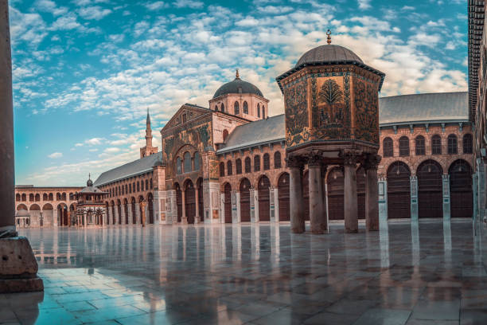
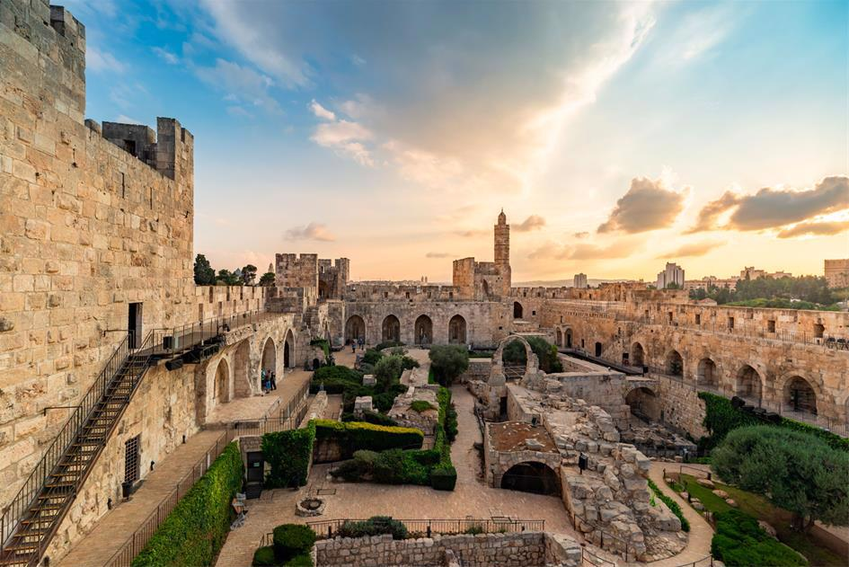
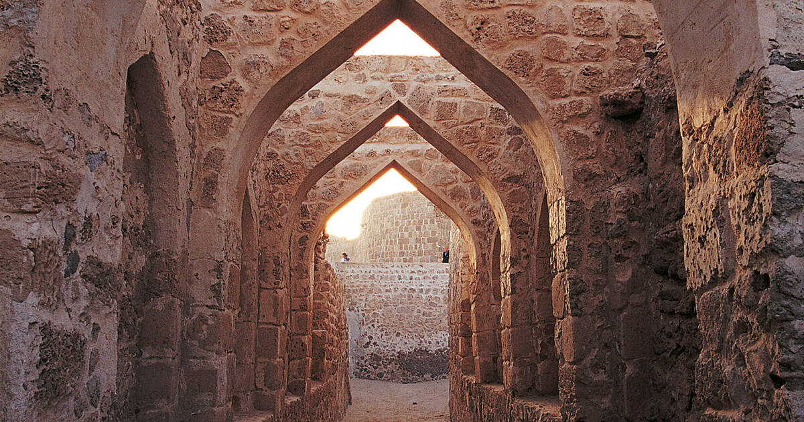
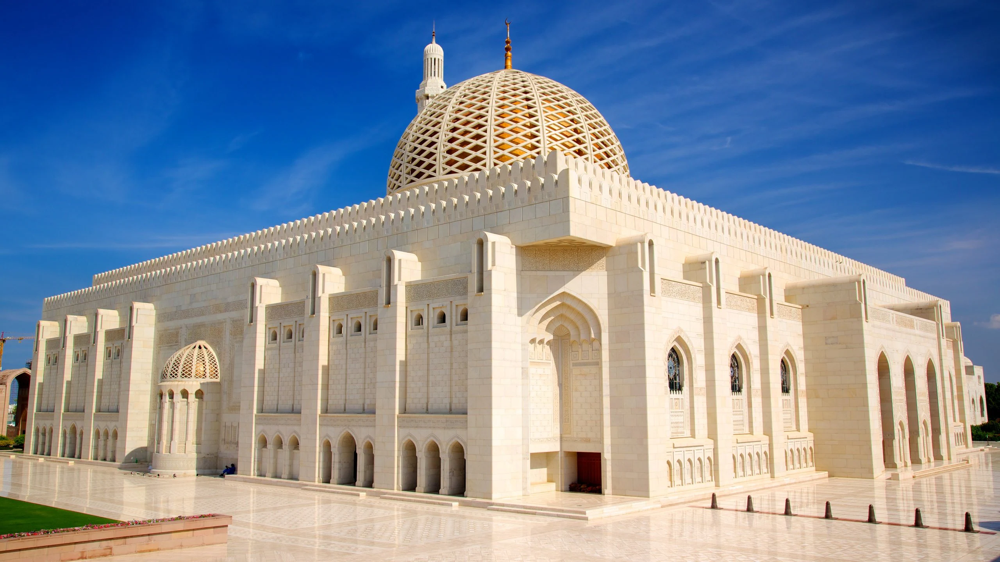
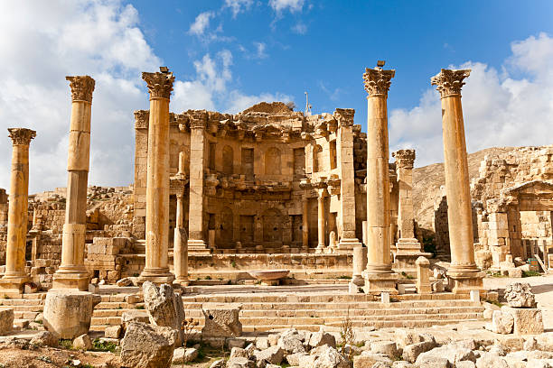
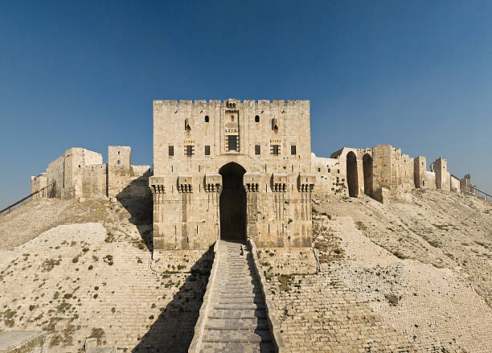

Step into the world of desert empires, sacred heritage, and timeless wonders.

Petra, the Rose-Red City, is Jordan’s most iconic archaeological wonder. Carved into towering sandstone cliffs by the Nabataeans, it dates back over 2,000 years. Its dramatic Treasury, tombs, and temples showcase extraordinary rock-cut architecture. A UNESCO World Heritage Site, Petra stands as a timeless symbol of ancient ingenuity.

Al-Ula is a breathtaking desert valley filled with ancient sandstone mountains and historic settlements. Its crown jewel, Mada’in Saleh (Hegra), features over 100 monumental tombs carved by the Nabataeans. The site showcases stunning rock-cut facades similar to Petra but uniquely Arabian in style.

The Jerusalem Old City is one of the world’s most sacred and historically rich places. Its ancient walls surround holy sites like the Western Wall, Dome of the Rock, and Church of the Holy Sepulchre. Narrow stone streets reflect thousands of years of culture, faith, and tradition. A UNESCO World Heritage Site, it remains a spiritual heart for millions around the world.

A magnificent ancient temple complex dedicated to the rejuvenation of kingship. Its grand pylons, towering statues, and illuminated columns showcase the glory of the New Kingdom. Standing at the heart of Luxor, it remains one of Egypt’s most breathtaking and historically rich monuments.

The majestic ceremonial capital of the Achaemenid Empire, founded by King Darius I. Its grand palaces, towering columns, and intricate stone carvings reflect ancient Persian power and artistry. A UNESCO World Heritage Site, Persepolis stands as a timeless symbol of Iran’s royal heritage.

A masterpiece of Byzantine architecture, built in 537 CE in the heart of Istanbul. It has served as a cathedral, a mosque, and now a museum symbolizing cultural harmony. Its massive dome, golden mosaics, and rich history make it one of the world’s most iconic landmarks.

Located in Luxor, Egypt, Karnak is one of the largest religious sites ever built. It features grand halls, towering pillars, sacred lakes, and ancient shrines dedicated mainly to Amun-Ra. With over 2,000 years of construction, it stands as a powerful symbol of ancient Egyptian devotion and architecture.

Baalbek is home to some of the most impressive Roman temple ruins in the world. Its giant stone blocks and grand columns showcase extraordinary ancient engineering. The Temple of Bacchus and Temple of Jupiter make Baalbek a remarkable archaeological marvel.

One of the oldest and most significant mosques in the Islamic world, built in the 8th century. Its stunning courtyard, grand prayer hall, and historic mosaic artwork reflect early Islamic architecture. The mosque is a revered spiritual site and a symbol of Damascus’s rich cultural heritage.

An ancient desert fortress perched high atop a rugged plateau overlooking the Dead Sea. Known for its dramatic history, it was the last stronghold of Jewish rebels against the Roman Empire. Its ruins, palaces, and panoramic views make it one of the Middle East’s most iconic archaeological sites.

A majestic ancient fortress standing at the entrance of Jerusalem’s Old City. It has witnessed thousands of years of history, from biblical times to the Ottoman era. Today, the citadel houses a museum and offers breathtaking views of one of the world’s holiest cities.

An ancient archaeological site and fortress that served as the capital of the Dilmun civilization. It reveals layers of history, including temples, residential areas, and defensive structures. Recognized as a UNESCO World Heritage Site, it stands as Bahrain’s most important historic landmark.

A magnificent modern Islamic landmark known for its stunning architecture and intricate craftsmanship. Home to one of the world’s largest chandeliers and hand-woven carpets, it reflects Oman's rich artistic heritage. A symbol of peace and spirituality, it welcomes visitors to experience its serene beauty.

One of the best-preserved Roman cities in the world, known as the “Pompeii of the East.” Its grand colonnaded streets, temples, theaters, and plazas reveal the glory of ancient Gerasa. Visitors can walk through millennia-old architecture that still stands in remarkable condition.

One of the oldest and largest medieval castles in the world, standing proudly on a hilltop. Its mighty walls, grand gateways, and ancient throne halls reflect centuries of Islamic and Crusader history. The citadel remains a powerful symbol of Aleppo’s resilience and architectural heritage.